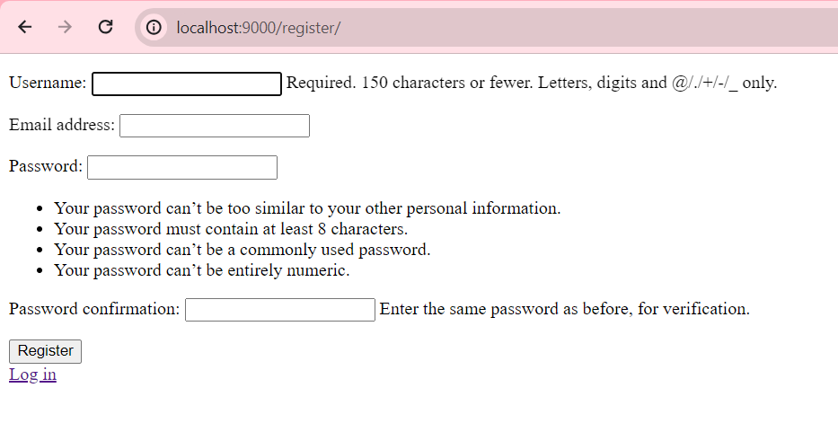
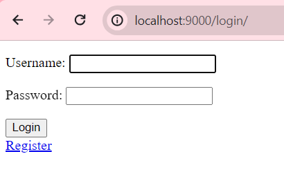
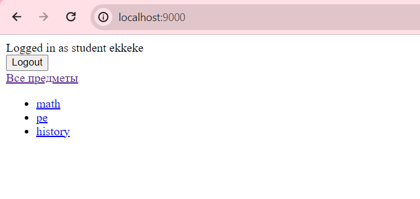
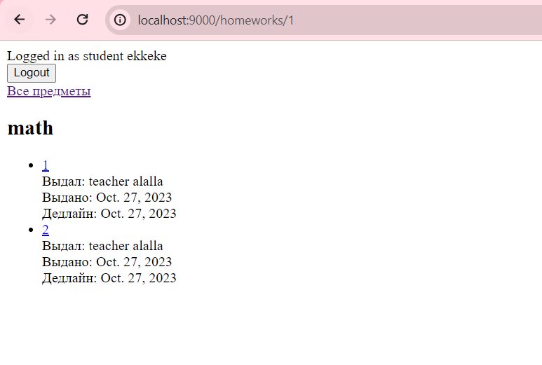
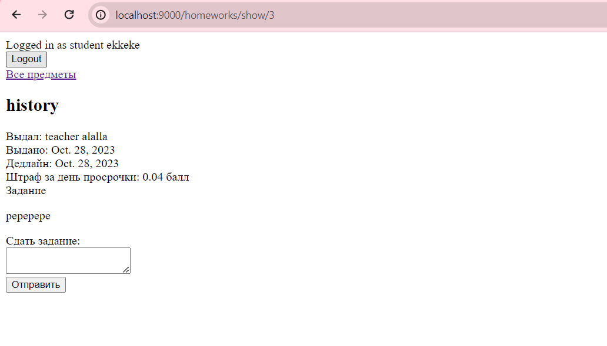
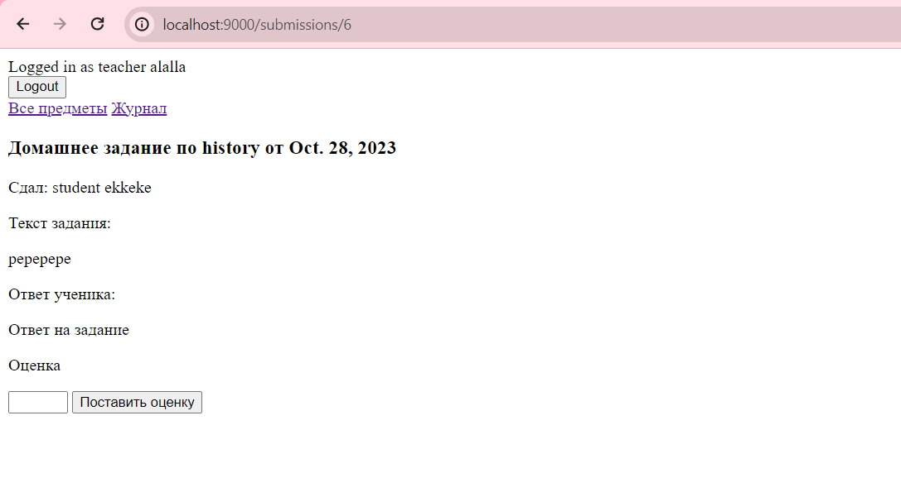
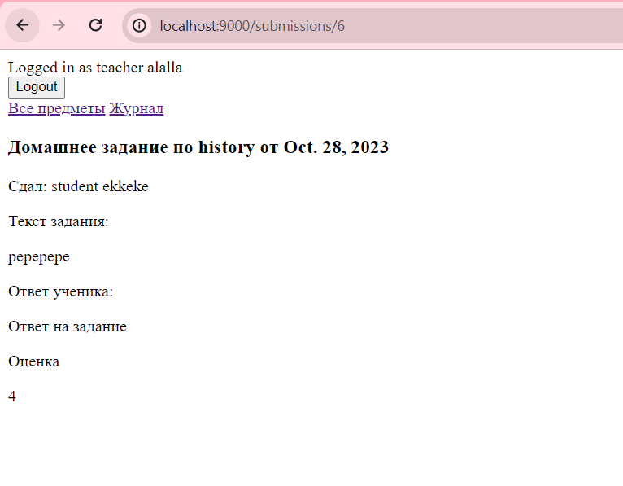
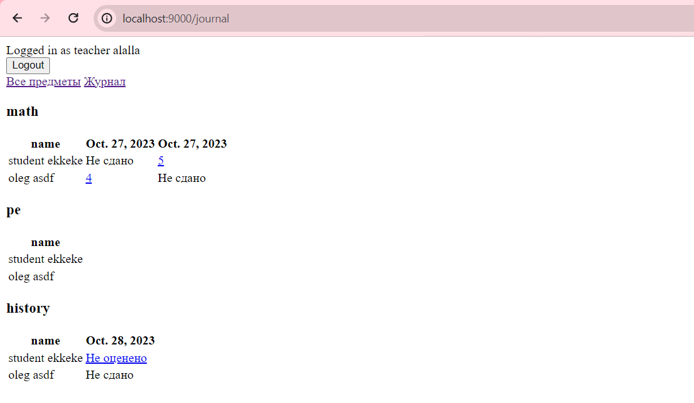

Реализация простого сайта средствами Django
Цель: овладеть практическими навыками и умениями реализации web-сервисов средствами Django.
Текст работы
Доска домашних заданий.\ О домашнем задании должна храниться следующая информация: предмет, преподаватель, дата выдачи, период выполнения, текст задания, информация о штрафах. Необходимо реализовать следующий функционал:
- Регистрация новых пользователей.
- Просмотр домашних заданий по всем дисциплинам (сроки выполнения, описание задания).
- Сдача домашних заданий в текстовом виде.
- Администратор (учитель) должен иметь возможность поставить оценку за задание средствами Django-admin.
- В клиентской части должна формироваться таблица, отображающая оценки всех учеников класса.
Модели
class User(AbstractUser):
is_teacher = models.BooleanField(default=False)
class Subject(models.Model):
name = models.CharField(max_length=100)
def __str__(self):
return self.name
class Homework(models.Model):
subject = models.ForeignKey(Subject, on_delete=models.CASCADE)
teacher = models.ForeignKey(get_user_model(), on_delete=models.CASCADE)
issue_date = models.DateField()
deadline = models.DateField()
description = models.TextField()
penalties = models.DecimalField(max_digits=5, decimal_places=2, default=0)
def __str__(self):
return f"Домашнее задание по {self.subject.name}"
class HomeworkSubmission(models.Model):
student = models.ForeignKey(get_user_model(), on_delete=models.CASCADE)
homework = models.ForeignKey(Homework, on_delete=models.CASCADE)
submission_text = models.TextField()
submission_date = models.DateField(auto_now_add=True)
def __str__(self):
return f"Сдача задания '{self.homework}' от {self.student.username}"
class HomeworkGrade(models.Model):
homework_submission = models.OneToOneField(HomeworkSubmission, on_delete=models.CASCADE)
grade = models.PositiveIntegerField()
graded_by = models.ForeignKey(get_user_model(), on_delete=models.CASCADE)
graded_date = models.DateField(auto_now_add=True)
def __str__(self):
return f"Оценка за сдачу '{self.homework_submission.homework}' от {self.homework_submission.student.username}"
Была переопределена стандартная модель пользователя. К ней был добавлен флаг для определения роли пользователя. По умолчанию при регистрации пользователю присваивается роль ученика. Для того, чтобы создать нового учителя, необходимо воспользоваться средствами django-admin.
Маршруты приложения urls.py
from django.urls import path
from django.contrib.auth.views import LogoutView
from . import views
urlpatterns = [
# Student
path('', views.home, name='home'),
path('homeworks/<int:subject_id>', views.index_homeworks, name='homeworks.index'),
path('homeworks/show/<int:hw_id>', views.show_homeworks, name='homeworks.show'),
path('submissions/', views.store_submission, name='submissions.store'),
# Teacher
path('journal', views.journal, name='journal'),
path('submissions/<int:s_id>', views.show_submission, name='submissions.show'),
path('grades', views.store_grade, name='grades.store'),
# Auth
path('register/', views.register, name='register'),
path('login/', views.user_login, name='login'),
path('logout/', views.user_logout, name='logout'),
]
Маршруты разбиты по логическим группам: маршруты для аутентификации, маршруты для студента и учителя.
Контроллеры приложения views.py
К маршрутам были добавлены соответствующие декораторы для проверки аутентификации. Не аутентифицированные пользователи могут просматривать только страницы логина и регистрации, аутентифицированные, напротив - их просматривать не могут. Также в маршрутах, которые могут просматриваться только учителями, такие как журнал и выставление оценок, стоит проверка на роль пользователя.
from homeworks.forms import RegisterForm, LoginForm
from django.shortcuts import render, redirect
from django.contrib.auth import login, authenticate, logout
from django.contrib.auth.decorators import login_required
from django.utils import timezone
from django.core.exceptions import ObjectDoesNotExist
from functools import wraps
from django.db.models.functions import ExtractDay
from homeworks.models import Subject, Homework, HomeworkSubmission, User, HomeworkGrade
def anonymous_required(view_func):
@wraps(view_func)
def _wrapped_view(request, *args, **kwargs):
if request.user.is_authenticated:
return redirect('home')
else:
return view_func(request, *args, **kwargs)
return _wrapped_view
# AUTH
@anonymous_required
def register(request):
if request.method == 'POST':
form = RegisterForm(request.POST)
if form.is_valid():
new_user = form.save(commit=False)
new_user.is_teacher = False
new_user.save()
return redirect('login')
else:
form = RegisterForm()
return render(request, 'auth/register.html', {'form': form})
@anonymous_required
def user_login(request):
if request.method == 'POST':
form = LoginForm(request, data=request.POST)
if form.is_valid():
user = form.get_user()
login(request, user)
return redirect('home')
else:
form = LoginForm()
return render(request, 'auth/login.html', {'form': form})
@login_required
def user_logout(request):
logout(request)
return redirect('login')
# System
def handler404(request, exception):
return render(request, 'system/404.html', status=404)
# Student
@login_required
def home(request):
subjects = Subject.objects.all()
return render(request, 'home.html', {
'subjects': subjects,
})
@login_required
def index_homeworks(request, subject_id):
subject = Subject.objects.get(pk=subject_id)
homeworks = Homework.objects.filter(subject_id=subject_id).all()
return render(request, 'student/homeworks.index.html', {
'subject': subject.name,
'homeworks': homeworks,
})
@login_required
def show_homeworks(request, hw_id):
homework = Homework.objects.get(pk=hw_id)
try:
submission = HomeworkSubmission.objects.filter(student_id=request.user.id, homework_id=hw_id).get()
except ObjectDoesNotExist:
submission = None
return render(request, 'student/homeworks.show.html', {
'homework': homework,
'submission': submission.submission_text if submission else None,
'is_submitted': submission is not None,
})
@login_required
def store_submission(request):
data = request.POST
submission = HomeworkSubmission(
submission_text=data['submission_text'],
homework_id=data['homework_id'],
student_id=request.user.id,
submission_date=timezone.now()
)
submission.save()
return redirect(request.META.get('HTTP_REFERER'))
# Teacher
@login_required
def journal(request):
if not request.user.is_teacher:
return redirect('home')
students = User.objects.filter(is_teacher=False).all()
subjects = Subject.objects.all()
for subject in subjects:
subject.homeworks = subject.homework_set.all()
for student in students:
student.grades = {}
for subject in subjects:
grades = []
for homework in subject.homeworks:
try:
submission = HomeworkSubmission.objects.get(student_id=student.id, homework_id=homework.id)
try:
grades.append({'id': submission.id, 'value': submission.homeworkgrade.grade})
except ObjectDoesNotExist:
grades.append({'id': submission.id, 'value': 'Не оценено'})
except ObjectDoesNotExist:
grades.append({'id': None, 'value': 'Не сдано'})
student.grades[subject.id] = grades
return render(request, 'teacher/journal.html', {
'students': students,
'subjects': subjects,
})
@login_required
def show_submission(request, s_id):
if not request.user.is_teacher:
return redirect('home')
try:
submission = HomeworkSubmission.objects.get(pk=s_id)
except ObjectDoesNotExist:
return redirect(request.META.get('HTTP_REFERER'))
return render(request, 'teacher/submissions.show.html', {
'submission': submission,
})
@login_required
def store_grade(request):
if not request.user.is_teacher:
return redirect('home')
data = request.POST
submission = HomeworkSubmission.objects.get(pk=data['submission_id'])
if submission.submission_date > submission.homework.deadline:
from datetime import datetime
d1 = datetime.strptime(str(submission.submission_date), "%Y-%m-%d")
d2 = datetime.strptime(str(submission.homework.deadline), "%Y-%m-%d")
days_overdue = (d1 - d2).days
penalty = submission.homework.penalties * days_overdue
else:
penalty = 0
grade = round(int(data['grade']) - penalty)
homework_grade = HomeworkGrade(
homework_submission_id=data['submission_id'],
grade=grade,
graded_by=request.user,
graded_date=timezone.now(),
)
homework_grade.save()
return redirect(request.META.get('HTTP_REFERER'))
Обзор страниц
Регистрация новых пользователей
Ученики могут зарегистрироваться на сайте.

Аутентификация пользователей
Страница входа на сайт.

Домашняя страница
На домашней странице выведены все предметы.

Просмотр домашних заданий
На сайте ученики могут просматривать список домашних заданий по всем дисциплинам. Для каждого задания отображается срок выполнения и описание.

Сдача домашних заданий
Ученики могут сдавать домашние задания, предоставляя текстовое описание выполненной работы.

Оценка заданий
Администратор (учитель) может оценивать задания.
 Оцененное задание: 
Отображение оценок учеников
В клиентской части сайта формируется таблица, отображающая оценки всех учеников класса.

Заключение
В процессе лабораторной работы был создан веб-сайт для выдачи, сдачи и оценки домашних заданий